Home
About
Search
April
January
February
March
April
May
June
July
August
September
October
November
December
Bird's-eye Primrose
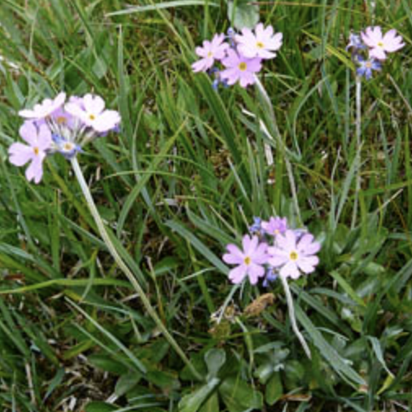
Blackberry
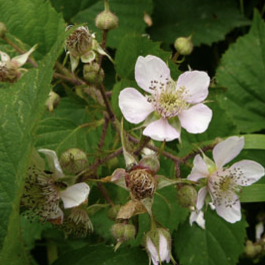
Borage
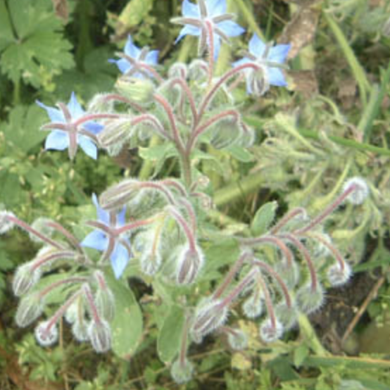
Californian Poppy
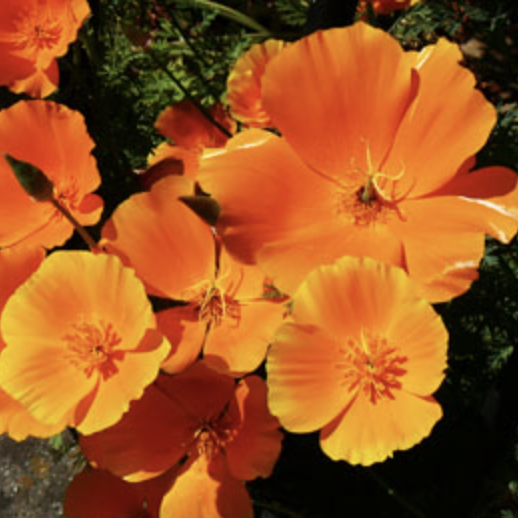
Cape Daisy
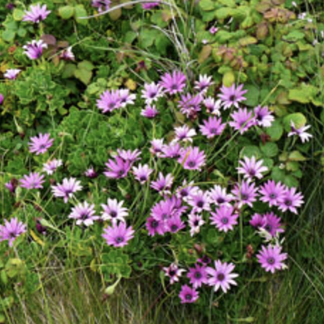
Common Nettle
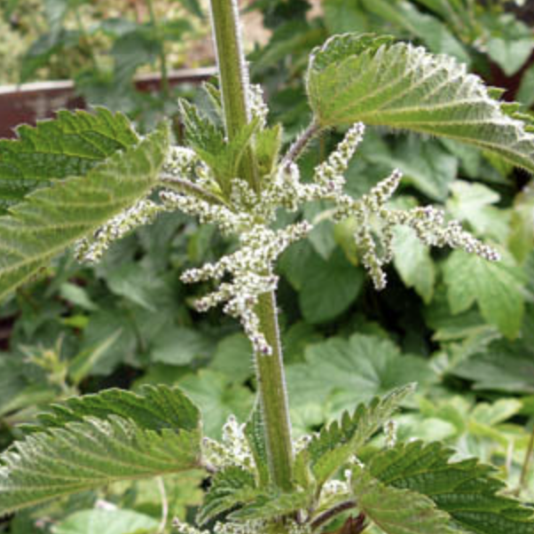
Common Sorrel
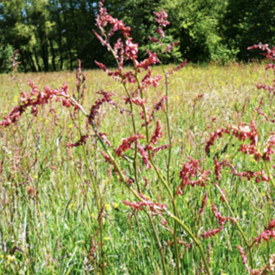
Common Vetch
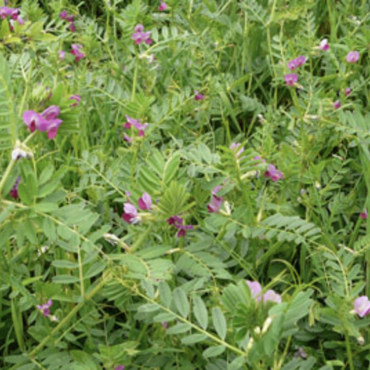
Foxglove
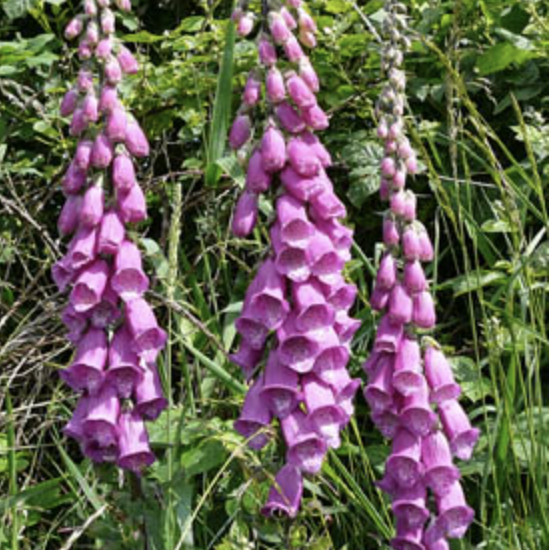
Globeflower
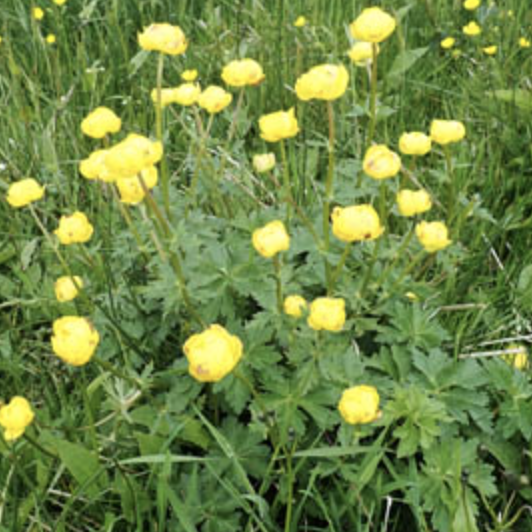
Hogweed
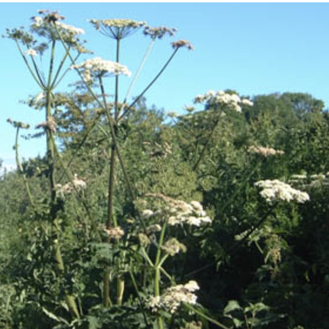
Jerusalem Sage
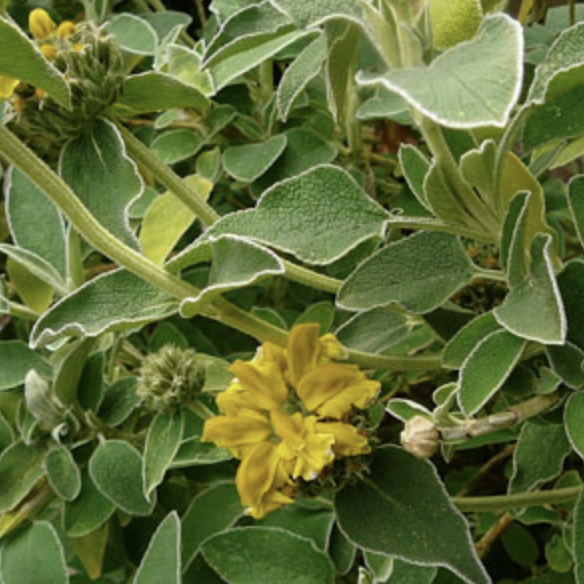
Lady's Mantle
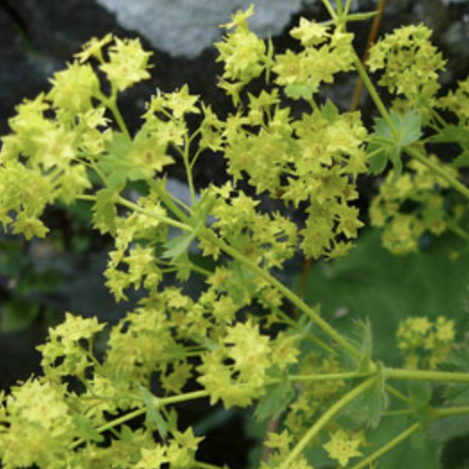
Purple Iris
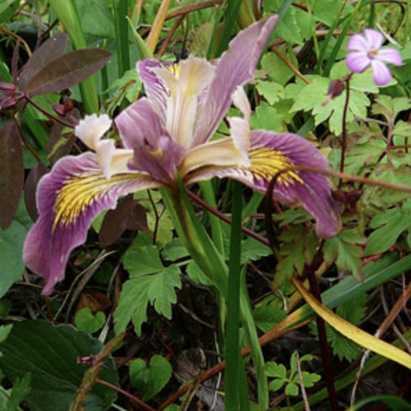
Rowan
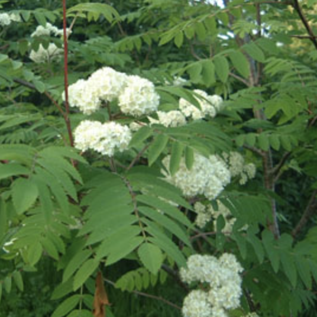
Wood Crane's Bill
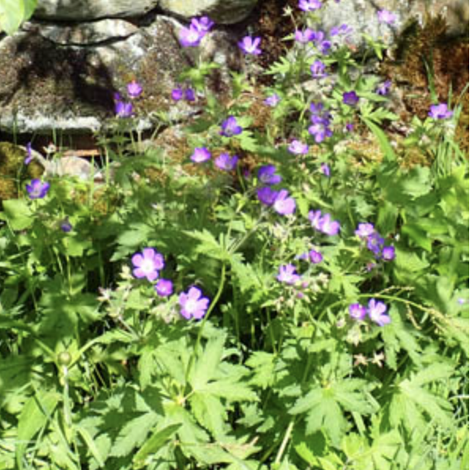